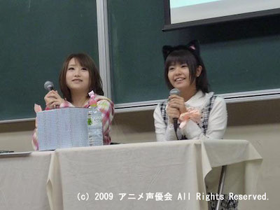
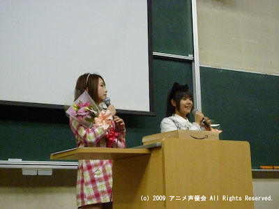

竹達彩奈＆巽 悠衣子トークイベント in 早稲田
竹達彩奈＆巽 悠衣子トークイベント in 早稲田 速報レポート
こんばんは。広報担当のえでんです。
本日は当会主催で、『竹達彩奈＆巽悠衣子トークイベントin早稲田』を開催いたしました。ご来場いただいた皆様、ありがとうございました！
質問コーナーや、観客の皆様にご協力いただいた「判定○×クイズ」、お二人の相性が試される「回答一致！相性ゲーム」、御両名の声優としての実力が試された「極めろ！新ジャンル！」のコーナーなど、どれもお客様に大きな歓声とともに楽しんでいただき、何よりでした。
竹達さんは巽さんのサプライズにより、ネコミミをつけたままイベントを行うことになってしまいました。
非常に似合っていますね。当会一同、とてもうれしいサプライズでした。
こちらは「判定○×クイズ」でのご出演者への景品、ハローキティのクッションです。見事に勝利した巽さんが獲得なさいました。ミニライブコーナーでは歓声なしという制限があり、運営としても大変心苦しかったのですが、そんな状況でもお客様に盛り上がっていただき、当会としては大変喜ばしい限りでした。
前半は緊張していた当会会員の司会もお二人の和やかなトークや会場の皆様の暖かさに触れて徐々に緊張もほぐれ、後半は持ち前のキレ味を発揮してくれました。（笑）
ご出演者のお二人は控え室に引いたあともずっとイベント中のことについて話してくださって、とても満足していただけたようで私としてもとても嬉しかったです。
冒頭にも書きましたが、一緒にイベントを盛り上げてくださったお客様には感謝感謝という感じです。改めてありがとうございました！
ちなみに、詳しいレポートは後ほどアニメ声優会の公式ウェブサイトにて公開される予定ですので、こちらも楽しみにお待ちください。
なお、明日も当会主催で、音楽家の畑 亜貴さんをお呼びして「畑 亜貴の早稲田に止マレ！」を開催いたします。このイベントは無料イベントとなっておりますので、皆様ぜひともまたお越しくださいませ。以前のブログでも掲載しましたように、12：00より当日入場整理券を配布いたしますので、確実に入場されたい方はそちらの時間にお越しくださいませ。
明日は、私えでんも司会として登場いたします！！皆様に楽しんでいただけるよう、全力を尽くしたいと思いますので、よろしくお願いいたします。